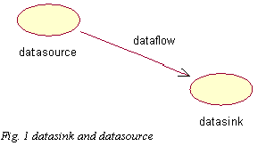
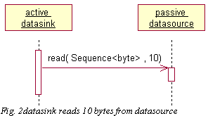
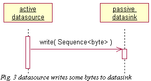
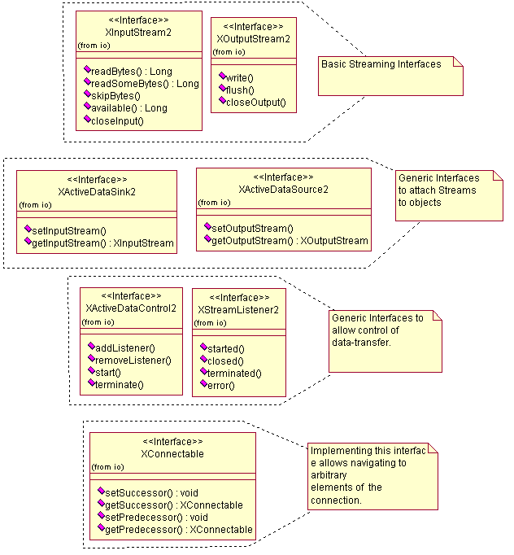
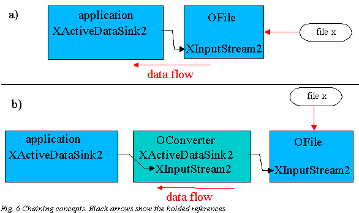
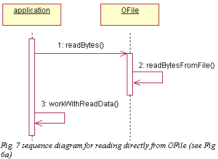
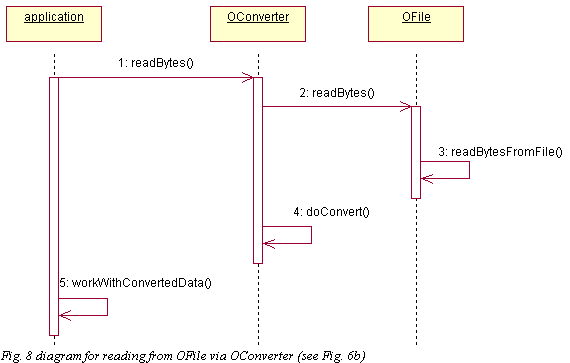
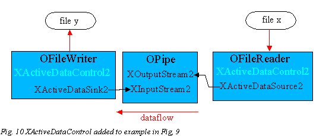
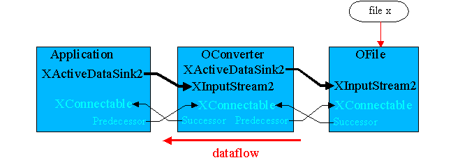
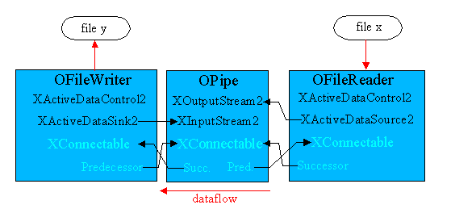

Streaming interfaces |
|
Abstract
This draft introduces the streaming interfaces (package com.sun.star.uno.io) and gives some examples about how they can be used.
Note: In some pictures there is a ignoreable 2 in the interface names (e.g. XInputStream2).
Contents
Introduction
The interfaces
- The 1st level : XInputStream/XOutputStream
- The 2nd level : XActiveDataSink/XActiveDataSource
- Chaining
- Piping
- The 3rd level : XActiveDataControl
- The 4th level : XConnectable
- Errorhandling
Introduction
- This chapter introduces some notions that you will come across later in this document.
- A datasource is an object, that has some data. A datasink is an object that gets some data. Note that no assumption is made about how data is transfered, only the direction of dataflow is fixed (Fig 1.). Note also, that one object can be datasource and datasink at the same time, for example a filter receives data from somewhere (=sink), modifies this data, and broadcasts this data again (=source).
- 
- Datasources and datasinks can be active or passive.
- 1) A datasink is active when in the thread of execution the datasink calls a method of datasource to get some data. In this case, the datasource is passive.
- 
- 2) A datasource is active when in the thread of execution the datasource calls a method of datasink to write some data. In this case, the datasink is passive.
- 
- Streams offer fixed interfaces to do the data transfer. At the lowest level, streams transport bytes. Data does not need to be transported in one piece but can be sliced into multiple pieces. To reflect the two cases above, there exist inputstreams and outputstreams. Inputstreams are used in the active sink-passive source scenario and outputstreams are used in the active source-passive sink scenario.
The interfaces
- The design of the streaming interfaces had three major goals :
- Easy to implement and short interface. Few interfaces to start with. Extension interfaces to make the component more flexible and reusable.
- Allow easy chaining and piping of streams (see below).
- Symmetric interfaces. The input/output symmetry of the problem should be reflected by the interfaces.
- Below you can find the results of the design.
- There is a kind of a four-level hierarchy indicated by the dotted lines.
- 
- Fig 5. The new streaming interfaces in a 4 level structure
The 1st level : XInputStream/XOutputStream
- A basic streaming facility can be implemented with XInputStream or XOutputStream alone.
- Example (see also the introduction chapter) :
- There is an object source that has some data, and an object sink that wants to get some data. There are two possibilities to fulfil the task :
- source implements an XInputStream and sink reads actively from it. In this case, source is a passive-data-source and sink is an active-data-sink.
- sink implements an XOutputStream and source writes actively into it. In this case, source is an active-data-source and sink is a passive-data-sink.
- Sample implementation ( for simplicity no error handling here ).
//simple scenario : 200 bytes shall be transfered from source to target
//active sink, passive source scenario.
class source : public XInputStream, public ....
{
...
// set the actual position to zero
source() { index = 0; }
// XinputStream.readBytes()
INT32 readBytes( Sequence<unsigned char> &seq , INT32 nBytes )
{
// beware eof !
INT32 nCopy = min( nBytes, 200-index );
// allocate memory for the requested number of bytes
seq.realloc( nCopy );
// put the data into the sequence
memcpy( seq.getArray() , &acData[index] , nCopy );
// increase actual position
index += nCopy;
return nCopy;
}
// XInputStream.skipBytes()
INT32 skipBytes( INT32 nBytes )
{
// beware eof !
INT32 nCopy = min( nBytes, 200-index );
// increase actual position
index += nCopy;
return nCopy;
}
// XInputStream.available()
INT32 available()
{
return 200-index;
}
// XInputStream.closeInput()
void closeInput()
{
// no special closing procedure in this simple example
}
...
private:
unsigned char acData[200];
INT32 index;
};
// the active datasink
// No error or exception handling for simplicity
class sink : public XXXXXXX, .....
{
// method of interface XXXXXXX
void readFromStream( const Reference< XInputStream > &r )
{
Sequence<unsigned char> seq(10);
BOOL bContinue = TRUE;
// number of bytes that have been read
INT32 nRead;
while( bContinue ) {
// read from the inputstream in 10 byte steps
nRead = r->readBytes( seq , 10 )
// ... do something with seq
// check, if eof has been reached
bContinue = ( 10 == nRead );
}
// close the stream
r->closeInput();
}
}
///in main :
{
Reference< XInterface > source;
Reference< XInterface > sink;
// instantiate source and sink through some service.
....
// query the inputstream
Reference< XInputStream > input_stream( source , UNO_QUERY );
// query the sink
Reference< XXXXXXX > some_interface( sink , UNO_QUERY );
// do the reading
some_interface->readFromStream( input_stream );
}
The 2nd level : XActiveDataSink2/XActiveDataSource2
- To make the above sample code more flexible, the sink class may implement XActiveDataSink. Calling the setInputStream()-method informs the sink from where to read the data. Thus the code becomes more generic, (sink is only required to support the small XActiveDataSink rather than Reference< XXXXXXX > ).
- When to start the data transfer, depends on the implementer of XActiveDataSink.
- Here there are three possibilities.
- In the call to XActiveDataSink.setInputStream() the whole data transfer is done. This is the worst possibility, because a user may not expect a set-method to behave this way.
- The call to XActiveDataSink.setInputStream() starts a thread that does the data transfer. This is a better solution, because the call is not blocking. Nevertheless the user must still be aware, that everything is well prepared for transfer when the call is made.
- The call to XActiveDataSink2.setInputStream() just informs the object where to read from. The start of data transfer is done over another method. This may be the start()-method of XActiveDataContro2 (see below).
- The 3rd solution is by far the best one, because 1) + 2) are more difficult to reuse and may lead to deadlocks, etc.
- Note that everything said about XActiveDataSink also holds for XActiveDataSource.
2.2.1 Chaining
- An interesting application of the first 2 interface-levels is the chaining concept.
- Imagine you have written the XInputStream implementation OFile, that offers raw data stored in a file. Then you have an arbitrary application, that has implemented XActiveDataSource. After you have connected both objects via setInputStream(), you have the connection shown in Fig. 6a.
- 
- Now a file shall be read, that uses a different file format. One could either modify OFile or application to do the conversion, but there is a better solution. An independent service OConverter can be used, it implements XActiveDataSink and XInputStream. Now the input stream of OFile can be plugged into OConverter and the input stream of OConverter can be plugged into application (Fig 6.b).
- Note that it is not necessary to change either application or OFile, only the plugging before the start of data transfer must be adapted. If desired, this may be decided at runtime.
- Note also, that you can easily insert more converters into the chain.
The following code samples show how plugging is done.
/// Plugging for Fig 6b (without error handling)
{
Reference<XInterface > application;
Reference<XInterface > OConverter;
Reference<XInterface > OFile;
// instantiate the three objects via services, put them into the above references
.....
// query the interfaces
Reference< XInputStream > aFileInputStream( OFile , UNO_QUERY );
Reference< XInputStream > aConverterInputStream( OConverter , UNO_QUERY );
Reference< XActiveDataSink > aConverterSink( OConverter , UNO_QUERY );
Reference< XActiveDataSink > aApplicationSink( application , UNO_QUERY );
// plug the connection
aConverterSink.setInputStream( aFileInputStream );
aApplicationSink.setInputStream( aConverterInputStream );
// start data transfer
...
}
- The following figure shows the resulting calling sequence for a readBytes()-call for both cases.
-

- 
- Note that the order of plugging may be significant if data transfer is started with the setInputStream method. Again the last line of the above sample code :
- a)
{
// plug the connection
aConverterSink.setInputStream( aFileInputStream ); // first connect passive parts.
aApplicationSink.setInputStream( aConverterInputStream ); // active player is connected last,
// no problems can arise
}
b)
{
// plug the connection
aApplicationSink.setInputStream( aConverterInputStream ); // application starts to read but OConverter
// is not connected to anything.
aConverterSink.setInputStream( aFileInputStream );
}
The problem can be avoided :
- Use code sample a) instead of b) when plugging. ( Responsibility is left to the user ). When b) is used, OConverter will throw an exception.
- OConverter can be designed, so that it can cope with the problem. If it is not connected to anything, but its read()-method is called, it could wait in a condition up to the moment when connection is established. Note that this is not an ideal solution, if the connection never gets established there remains a dead thread without any sign of an error. It also must be implemented again and again for each converter.
- Do not start the data transfer with these set-methods. Better use XActiveDataControl (see below)
- Note : It can be quite difficult to implement a OConverter, that modifies the number of bytes to read. The skipBytes(), readBytes() and available()-methods must always return the requested number of bytes, in such cases, converters must do at least some buffering on their own. For such applications it is in general easier to implement an output stream (and use pipes and threads to get the desired interface, see below). However this may be too expensive in some cases.
2.2.2 Piping
- Motivation :
- For a lot of applications it is necessary to have more than one active player in the game. Imagine you have a datasource that can only write actively and a datasink that can only read actively and you want to connect them. This can be done by a pipe. A pipe offers an OutputStream to write to and an InputStream to read from. Thus it must buffer the data that come in via XOutputStream.
- Fig. 9 shows a concrete example for a pipe. A file x is copied into file y. OFileReader reads file x in certain slices. Each slice is written via the output stream to OPipe. OFileWriter gets actively data from OPipe and writes it directly into file y. The connection is plugged with standard components (which still need to be implemented), they can be used in other scenarios independent of each other.
- The following source code shows how the above connection is established (for simplicity without error handling).
{
Reference< XInterface > OFileWriter, OPipe, OFileReader;
// instantiate them via a standard service
....
// get the interfaces
Reference< XActiveDataSink > sink( OFileWriter, UNO_QUERY );
Reference< XOutputStream > pipeOut( OPipe , UNO_QUERY );
Reference< XInputStream > pipeIn( OPipe , UNO_QUERY );
Reference< XActiveDataSource > source( OFileReader , UNO_QUERY );
// do the plugging
sink.setInputStream( pipeIn );
source.setOutputStream( pipeOut );
// now work with the connection ( sink and source )
}
- Note : You can insert further filters and converters via chaining. For example you can insert an instances of OConverter (above example) between OFileWriter and OPipe.
- Note : A pipe can also be seen as a mechanism to transform an output stream into an input stream at the costs of the buffer resources.
- Note : By exchanging OFileWriter with an object that implements XActiveDataSink and XActiveDataSource, one could add a further pipe. This shows the flexibility of the concept.
The 3rd level : XActiveDataControl
- The question 'when should data transfer start ?' is not solved sufficiently. One can say that as soon as the last connection has been plugged, the data starts to flow. That is not acceptable for some applications. An generic interface is needed, which can one use to initiate the data transfer. This is the role of XActiveDataControl.
- XActiveDataControl should be implemented with XActiveDataSink or XActiveDataSource, thus each active player in the game should implement it.
- XActiveDataControl offers a non-blocking start()-method to initiate data transfer. The terminate()-method should abort the data transfer before it is normally finished. Usually this should be done by calling the close()-method of the connected streams. See error handling for further information.
- 
To startup the above sample pipe, the following code is necessary :
{
Reference< XInterface > OFileWriter, OPipe, OFileReader;
// instantiate them via a standard service
....
// get the interfaces for plugging
Reference< XActiveDataSink > sink( OFileWriter, UNO_QUERY );
Reference< XOutputStream > pipeOut( OPipe , UNO_QUERY );
Reference< XInputStream > pipeIn( OPipe , UNO_QUERY );
Reference< XActiveDataSource > source( OFileReader , UNO_QUERY );
// plug ( data transfer is not started )
sink.setInputStream( pipeIn );
source.setOutputStream( pipeOut );
// get the interfaces for starting
Reference< XActiveDataControl > controlSink( OFileWriter );
Reference< XActiveDataControl > controlSource( OFileReader );
// start
controlSink.start(); // order of starting is not important, the whole connection already exists.
controlSource.start(); // it may be less expensive to start sink first, because OPipe
// may need less resources for buffering.
}
XActiveDataControl also offers a listener administration.
The 4th level : XConnectable
- The held references in Fig. 10 are unidirectional. There is no generic way to get from OFileWriter to OFileReader. This maybe interesting for further streaming administration services.
- Here now appears XConnectable on stage. Every class in the connection should implement XConnectable. Below (Fig.11 and Fig. 12) you find the extended version of the above examples.
-

Fig 11. Extended example (see fig. 6b). Each element in the connection implements XConnectable and connects to their neighbours. Thus it is possible to reach Application from OFile. The direction of the connection (successor/predecessor) is determined by the direction of dataflow. -

Fig 12. Extended example (see fig 10). Now every element of the connection is reachable with one arbitrary element. - The extra plugging work should not be left to the user. In order to get this working with the least effort for the user, the implementation of the XActiveDataSink.setInputStream() or XActiveDataSource2.setOutputStream() must be modified the following way:
OFileWriter::setInputStream( const Reference< XInputStream > &r )
{
/// store the inputstream reference for later use
m_in = r;
/// does the instance provide a XDataSourceRef ?
Reference< XConnectable > predecessor( r , UNO_QUERY );
setPredecessor( predecessor );
}
application::setPredecessor( const Reference< XConnectable > &r )
{
/// if the references match, nothing needs to be done
if( m_pred != r ) {
/// store the reference for later use
m_pred = r;
if( m_pred.is() ) {
/// set this instance as the sink !
m_pred.setSuccessor( this );
}
}
}
- A similar implementation of for setSuccessor allows to get the desired references with no extra work for the user.
- There now exists a ring reference, which raises a deallocation-problem. This can be solved sufficiently, when in close()-operations all references are explicitly deleted.
- OConverter::closeInput()
{
/// send the close to the chained partner
getInputStream()->closeInput();
//.... do some tiding up, that is necessary when closing.
/// release all references
setPredecessor( Reference< XConnectable >() );
setSource( Reference< XConnectable >() );
setInputStream( Reference< XInputStream >() );
}
Note that any object, which does not support this XConnectable mechanism will interrupt the connection.
- The sense of XConnectable is maybe not very clear. Note that implementing this underlying connection of elements will allow to create standard services, that can help to establish and administrate connections of streams. This may be an important reason for using this new streaming interfaces, that's why you are strongly encouraged to implement them.
- An use case may be a video stream, where the sink wants to change some settings at source, but the sink doesn't know the source. It can then use XConnectable to wander to the source, where it can query on a known interface.
2.5 Errorhandling
- This chapter deals with abnormal conditions that may occur when using streams.
- Let's take the pipe example as a basis for discussion.
- In the normal case both FileReader and FileWriter start to do their job. When FileReader has read all data from the file x and has written all data into the outputstream, it must call closeOutput on XOutputStream. This will disconnect OPipe and OFileReader, OFileReader may be deleted. When OFileWriter tries to read beyond eof, it realizes that it gets less bytes than questioned. This is interpreted by OFileWriter as eof sign. It then calls closeInput on the XInputStream and frees its own resources. The reference between OPipe and OFileWriter is removed, OFileWriter and OPipe may be deleted.
- Possible error scenarios are :
- Error during reading file x (OFileReader). In that case OFileReader closes its internal resources, broadcasts an error to all listeners and calls closeOutput() on outputstream. Note that OPipe and OFileWriter cannot distinguish between a normal eof-close and a error close (unless they are listeners).
- Error during writing file y (OFileWriter). In that case, OFileWriter closes its internal resources, broadcasts an error to all listeners and calls closeInput() (which will disconnect OFileWriter from OPipe ) on inputstream. OFileReader is still writing on OPipe's outputstream. At any time after the closeInput() call, OPipe may throw an IOException, if OFileReader calls a write-method. OFileReader catches the exception, calls closeOutput() on the outputstream, which will disconnect OPipe from OFileReader. It may also broadcast an error to all listeners.
- Error in OPipe (e.g. buffer full). At any time after the exceptional state has occurred, OPipe will throw exceptions for every read call and every write call. OFileReader and OFileWriter must then call closeInput()/closeOutput() and broadcast an error.
- terminate()-method on OFileReader or OFileWriter is called. This can be handled very similar to the above error conditions, except that the terminated()-handler must be called.
- Note that all above errors in general occur in a multi-threaded environment. Especially situations as that the terminate()-method of OFileWriter gets called when another thread is in the read-Method of OPipe must be handled correctly. In this case, terminate must call closeInput(), OPipe must return out of the reading thread with eof-signature (less bytes read than questioned) and OFileWriter must call only the terminated() but not the error() handler!.
Standard services
The following standard services have been implemented . Implementations can be found in udk/io/source/stm. The dll is stm.dll. All implementations are thread safe. However it is probably not very meaningful, if two threads read the same input stream at the same time which thread gets which data is then arbitrary.
Note: All streams must be explicitly closed in order to free their resources and release their ring references.
com.sun.star.uno.io.Pipe : implements XOutputStream, XInputStream and XConnectable
Basic implementation (see fig 12) to connect input stream and output stream. In general one thread is writing data into the pipe and another is reading from the pipe. The pipe does the necessary buffering in memory.
com.sun.star.uno.io.DataInputStream : implements XDataInputStream, XActiveDataSink and XConnectable
Provides the XDataInputStream functionality. Must be chained to another XInputStream (e.g. a pipe) to be meaningful.
com.sun.star.uno.io.DataOutputStream : implements XDataOutputStream, XActiveDataSource and XConnectable
Provides the XDataOutputStream functionality. Must be chained to another XOutputStream (e.g. a pipe) to be meaningful.
com.sun.star.uno.io.MarkableInputStream : implements XMarkableStream, XInputStream, XActiveDataSink and XConnectable
Provides the XMarkableStream functionality. When a mark is created, the implementations buffers all further read data. Must be chained to another inputstream to be meaningful.
com.sun.star.uno.io.MarkableOutputStream : implements XMarkableStream, XOutputStream, XActiveDataSource and XConnectable
Provides the XMarkableStream functionality. When a mark is created, the implementations buffers all further written data. The data is written further through the chain, when the mark is deleted. Even a flush will not have any effect. Must be chained to another outputstream to be meaningful.
com.sun.star.uno.io.ObjectInputStream : implements XObjectInputStream, XActiveDataSink and XConnectable
Provides XObjectInputStream functionality. All services of instances, that shall be read, must be registered with the global service manager. All services must implement XPersistObject. Must be chained to another XInputStream. Somewhere in the chain must exist an XMarkableStream. Be careful that all elements between this and XMarkableStream must not buffer data ( otherwise the markable stream becomes meaningless ) and one receives coincident results.
com.sun.star.uno.io.ObjectOutputStream : implements XObjectOutputStream, XActiveDataSource and XConnectable
Provides XObjectOutputStream functionality. All services, that shall be serialized, must implement XPersistObject. Must be chained to another XOutputStream. Somewhere in the chain must exist a XMarkableStream. Be careful that all elements between this and XMarkableStream must not buffer data ( otherwise the markable stream becomes meaningless) and one receives coincident results.
|
Author:
Joerg Budischewski
($Date: 2004/11/27 07:50:15 $) |